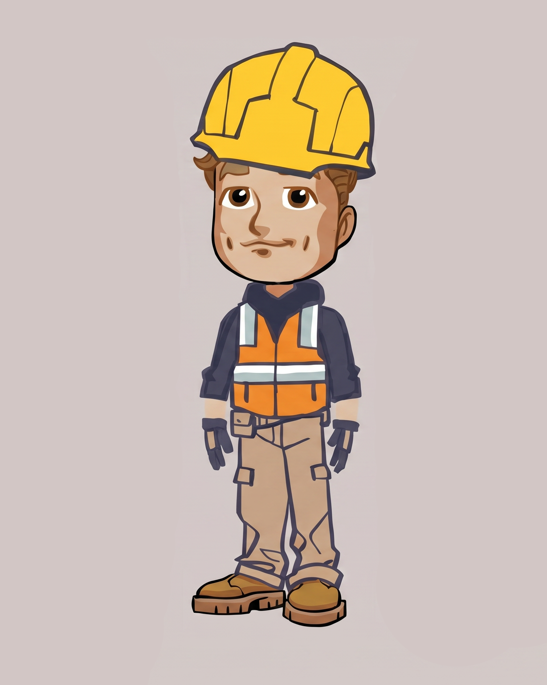
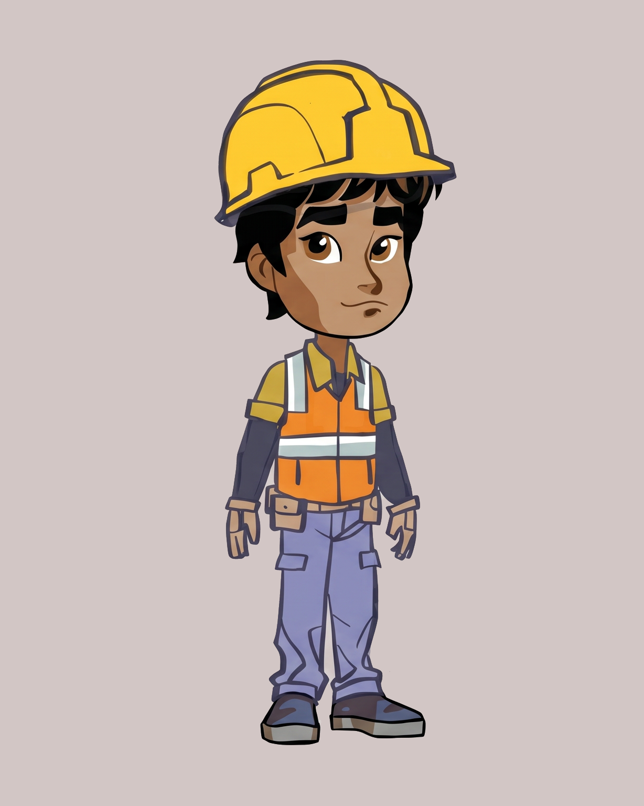
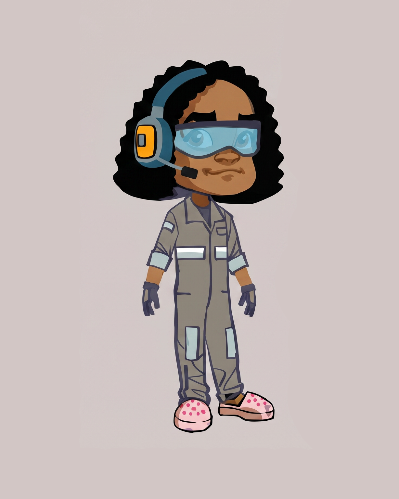
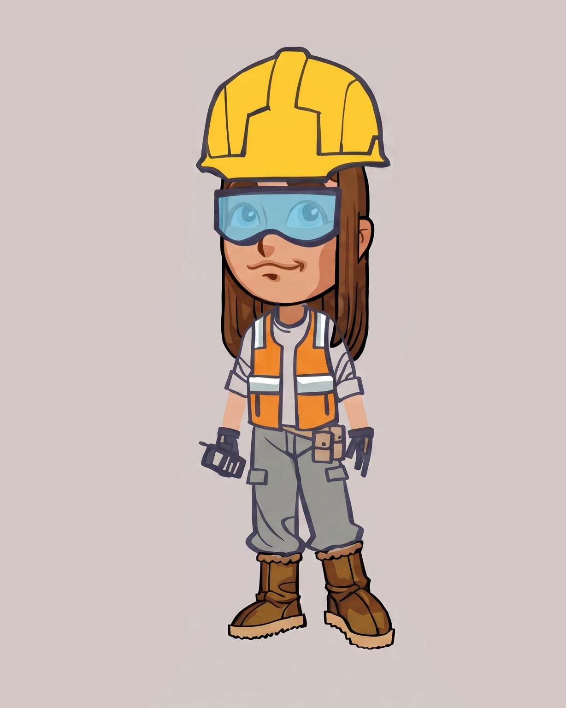
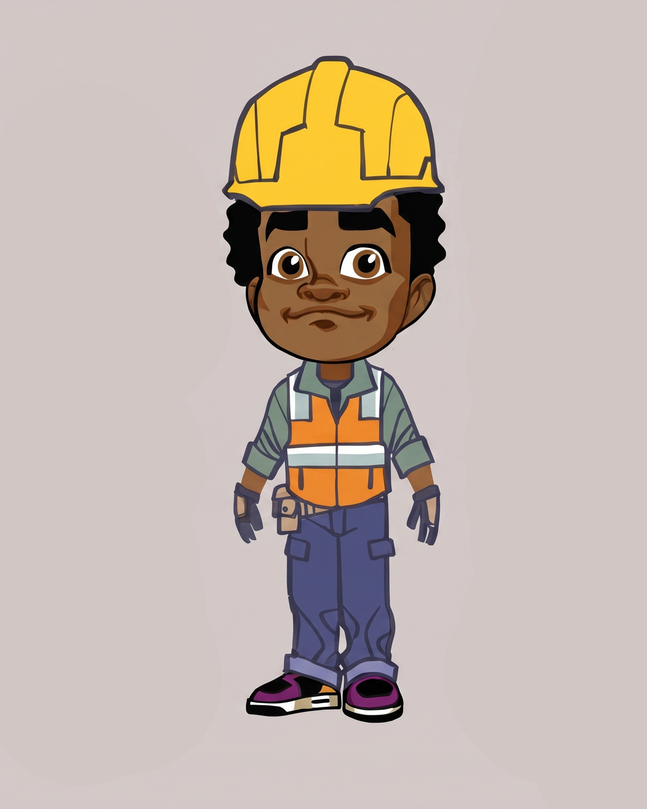
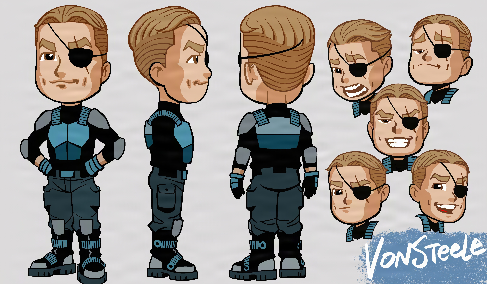

Matchbox Crew
Color
Review
Review
Episode 101 — Bridge of Super Spies!
Convoy
Character Lineup
Episode 101 · Cast

Sean
Lead — The Spy Kid
Land Rover 6x6 · #JKH28


Ted
Fire & Rescue Lead
Triumph Scrambler · #JKH31
Ford F-150 · #JKH36


Charmaine
Tech & Air Support
Rescue Helicopter · #JKH39
Porsche 911 · #BL252


Aimee
Speed & Driving Expert
Ford Mustang Fastback · #JKH34
Skidster · #JBW03


Crosby
Engineering & Heavy Machinery
Excavator · #JKH38
Ford F-150 · #JKH36
Turf Hauler · #HFB90


Von Steele
Villain — Super Criminal
Dodge Durango · #HFP46
Ford F-650 Rollback · #JKH49
CVY26_001_101
Color Review · Bridge of Super Spies!
THANKS!